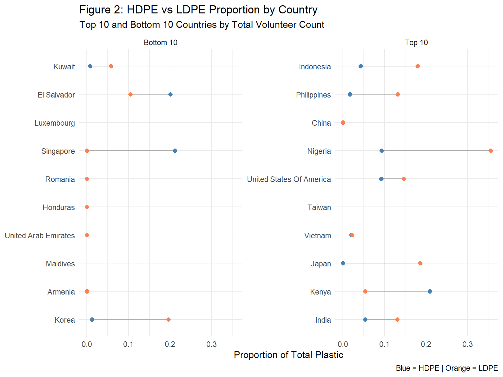
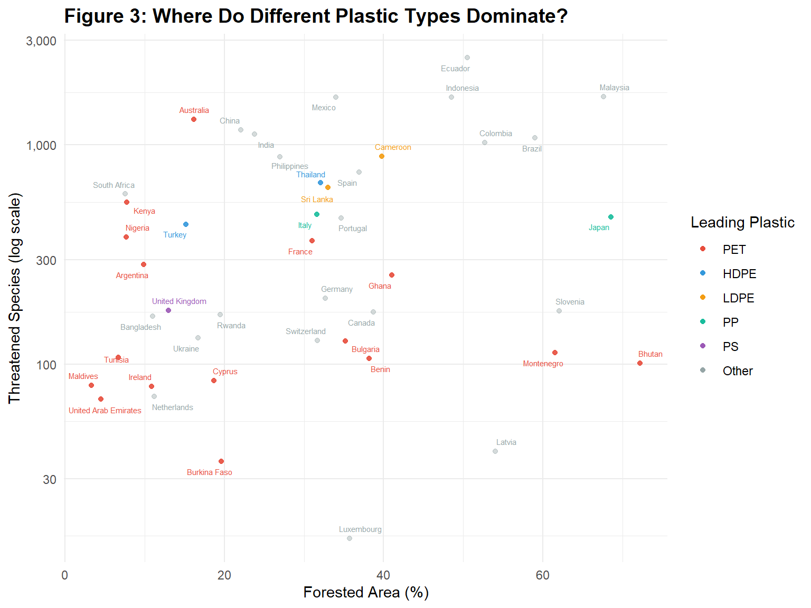
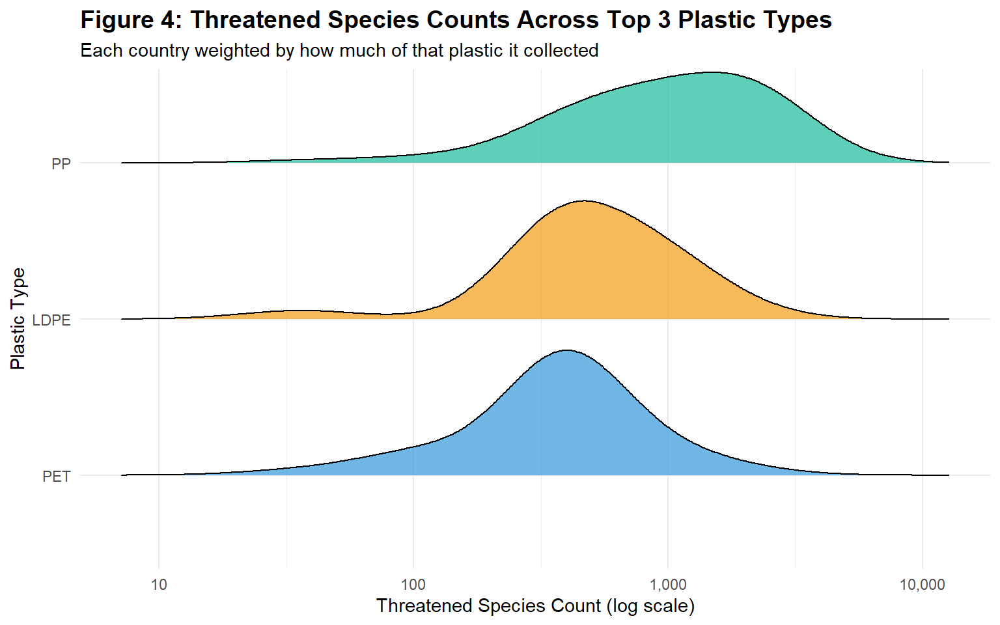

This dashboard presents findings from a global plastic waste audit conducted by Break Free from Plastic (BFFP), covering 2019 and 2020 across 45+ countries. The data is observational and relies on self-reported volunteer submissions. We supplement the main dataset with country-level ecological and economic data from the API Ninjas Country API (accessed April 2025).
Research Questions:Do countries with more volunteers tend to collect more proportions of both high and low density polyethylene plastic in 2019 and 2020?
Do countries with greater forest coverage and more threatened species show a different breakdown of plastic types?
The main data set comes from Sarah Sauve, who conducted an audit based on Break Free from Plastic (BFFP), a global organization that runs annual brand audits. In these audits, volunteers around the world collect and report plastic waste. This makes the data set observational, as it relies on self-reported data submitted by volunteers each year, specifically for 2019 and 2020 in this case. However, the exact methods used by each volunteer are unknown. Each observation represents the plastic collected from a specific parent company within a given country and year. Here, Sauve intends to utilize this data set to raise plastic pollution awareness and highlight its importance. We are further supporting Sauve with our own analysis on two research questions presented later in this deliverable.
Below is a breakdown of all the variables in this data set:
country (character): country of cleanup
year (double): year, either 2019 or 2020
parent_company (character): source of plastic
empty (double): plastics counted without a brand being recorded
hdpe (double): high density polyethylene count (i.e. plastic milk containers, plastic bags, bottle caps, trash cans, oil cans, plastic lumber, toolboxes, supplement containers)
ldpe (double): low density polyethylene count (i.e. plastic bags, Ziploc bags, buckets, squeeze bottles, plastic tubes, chopping boards)
o (double): other counts
pet (double): polyester plastic count (i.e. polyester fibers, soft drink bottles, food containers)
pp (double): polypropylene count (i.e. flower pots, bumpers, car interior trim, industrial fibers, carry-out beverage cups, microwavable food containers, DVD keep cases)
ps (double): polystyrene count (i.e. toys, video cassettes, ashtrays, trunks, beverage/food coolers, beer cups, wine and champagne cups, carry-out food containers, Styrofoam)
pvc (double): PVC plastic count (window frames, bottles for chemicals, flooring, plumbing pipes)
grand_total (double): grand total count (all types of plastic)
num_events (double): number of counting events
volunteers (double): number of volunteers
Before combining two CSV files, the 2019 and 2020 data, some data cleaning steps were implemented. The 2019 CSV had two columns for “pp” (Polypropylene) and “ps” (Polystyrene) counts, so the repeated columns were combined to make one overall column for each variable. The data type of the “grand_total” column from the 2020 CSV was changed from character to numeric. Lastly, some variables were renamed to match one another, ensuring no errors when combining the two CSV files.
However, this data set has important limitations and potential inconsistencies to consider. The data depends on where volunteers are located, meaning it is more likely to be collected in accessible areas, which can lead to over- or under- representation in some regions and introduce bias. Due to the nature of self-reported data, there is no way for us to verify the data. There may also be variability in how the plastic data is classified and reported to BFFP despite clear definitions.
The supplementary data set comes from API Ninjas, a software company that publishes real-world data into formatted APIs. The Country API aggregates geographic, demographic, and economic metrics for every country in the world which can be found at: https://api-ninjas.com/api/country. Each observation represents a single country, where each row contains nation level statistics for that country. For example, a single row might represent the United States, containing values such as a population of approximately 331 million, a GDP of roughly $23 trillion, and an unemployment rate around 5%. We are utilizing this API to join demographic and economic context to the primary plastics data set, supporting our research questions on how volunteer participation and plastic collection patterns vary across countries of different sizes and development levels.
The data were accessed from our code using HTTP GET requests to the /v1/country endpoint, with each country returned as a JSON object. Requests were made by country name, iterating over the unique country names in the plastics data set. Each JSON object was then joined to the plastics data set on country name, adding each country’s demographic and economic metrics to its corresponding plastic collection observation.
Below is a breakdown of the key variables used from this data set:
name (character): name of the country
population (integer): total population of the country
gdp (double): gross domestic product in US Dollars
gdp_growth (double): GDP growth rate in %
unemployment (double): unemployment rate in %
surface_area (double): total surface area of the country in km²
urban_pop_rate (double): percentage of the population living in urban areas
fertility (double): average number of children born per woman
infant_mortality (double): number of infant deaths per 1,000 live births
currency (character): 3-letter currency code of the country
threatened_species (integer): number of threatened species
forested_area (double): percentage of the country’s total land area covered by forest
This data set also has important limitations to consider. API Ninjas does not include collection dates or timestamps for individual records, so we are unable to determine how recent each country’s data was collected or updated. Additionally, since the exact source for each variable is not listed, it is difficult to determine the reliability of certain metrics collected for each country. There were also discrepancies in how each country name was displayed between API Ninjas and our plastics data, requiring standardization prior to merging.
| Table 1: HDPE Summary | ||||
| United States of America | ||||
HDPE Metrics
|
Volunteer Metrics
|
|||
|---|---|---|---|---|
| Avg HDPE | % HDPE | Total Plastic | Avg Volunteers | Total Volunteers |
| 0.72 | 9.2% | 22622 | 0.77 | 740 |
Table 1 shows high density HDPE and volunteer statistics for the United States of America. Interestingly, the USA has both small amounts of volunteers and HDPE plastic collected at 9.2% and a mean of 0.72 HDPE plastics collected across parent companies. This may entail that the number of volunteers is correlated to the amount of HDPE plastic collected. To find whether this 9.2% is truly low, we will look at low density polystyrene (LDPE) statistics.
| Table 2: LDPE Summary | ||||
| United States of America | ||||
LDPE Metrics
|
Volunteer Metrics
|
|||
|---|---|---|---|---|
| Avg LDPE | % LDPE | Total Plastic | Avg Volunteers | Total Volunteers |
| 1.21 | 14.68% | 22622 | 0.77 | 740 |
Even with the same number of volunteers in the USA, the proportion of LDPE collected was reported to be higher. Table 2 shows these statistics, with 14.68% of the plastic being of the LDPE type and more than 1 LDPE plastic being collected for every parent company, on average. There may be an association or more comparisons to further investigate, but we are interested in comparing a type of polystyrene across different countries, specifically looking at volunteer statistics. We decided to look into Indonesia HDPE statistics.
| Table 3: HDPE Summary | ||||
| Indonesia | ||||
HDPE Metrics
|
Volunteer Metrics
|
|||
|---|---|---|---|---|
| Avg HDPE | % HDPE | Total Plastic | Avg Volunteers | Total Volunteers |
| 1.82 | 4.25% | 36774 | 7.37 | 6850 |
According to table 3, Indonesia has significantly more volunteers (6850 compared to USA’s 740). However, the amount of HDPE plastic collected was almost half, only 4.25% of the plastic collected was of the HDPE kind. This suggest environmental and other country-specific conditions playing a major factor in different types of plastic collected, or even the distribution in plastic types. To easier see patterns and more statistics, we gathered data for the top and bottom 5 average volunteers for both high and low density.
| Table 4: HDPE — Top & Bottom 5 Volunteer Countries | ||||||
Location
|
HDPE Metrics
|
Volunteer Metrics
|
||||
|---|---|---|---|---|---|---|
| Country | Group | Avg HDPE | % HDPE | Total Plastic | Avg Volunteers | Total Volunteers |
| Taiwan_ Republic of China (ROC) | Top 5 | 0.00 | 0% | 241292 | 2847.09 | 31318 |
| Bhutan | Top 5 | 0.00 | 0% | 7000 | 1060.00 | 5300 |
| Cote D_ivoire | Top 5 | 53.00 | 100% | 106 | 750.00 | 1500 |
| Benin | Top 5 | 0.00 | 0% | 10318 | 582.00 | 2328 |
| Colombia | Top 5 | 14.28 | 20.27% | 7927 | 194.56 | 5253 |
| Ireland | Bottom 5 | 0.00 | 0% | 281 | 0.03 | 1 |
| Slovenia | Bottom 5 | 0.07 | 1.22% | 2427 | 0.04 | 9 |
| Latvia | Bottom 5 | 0.81 | 0.26% | 5786 | 0.06 | 13 |
| Australia | Bottom 5 | 0.48 | 3.98% | 1674 | 0.07 | 5 |
| Chile | Bottom 5 | 1.74 | 13.63% | 2033 | 0.11 | 13 |
| Table 5: LDPE — Top & Bottom 5 Volunteer Countries | ||||||
Location
|
LDPE Metrics
|
Volunteer Metrics
|
||||
|---|---|---|---|---|---|---|
| Country | Group | Avg LDPE | % LDPE | Total Plastic | Avg Volunteers | Total Volunteers |
| Taiwan_ Republic of China (ROC) | Top 5 | 0.00 | 0% | 241292 | 2847.09 | 31318 |
| Bhutan | Top 5 | 0.00 | 0% | 7000 | 1060.00 | 5300 |
| Cote D_ivoire | Top 5 | 0.00 | 0% | 106 | 750.00 | 1500 |
| Benin | Top 5 | 0.00 | 0% | 10318 | 582.00 | 2328 |
| Colombia | Top 5 | 16.52 | 22.47% | 7927 | 194.56 | 5253 |
| Ireland | Bottom 5 | 0.00 | 0% | 281 | 0.03 | 1 |
| Slovenia | Bottom 5 | 1.48 | 19.88% | 2427 | 0.04 | 9 |
| Latvia | Bottom 5 | 0.06 | 3% | 5786 | 0.06 | 13 |
| Australia | Bottom 5 | 3.22 | 8.83% | 1674 | 0.07 | 5 |
| Chile | Bottom 5 | 1.87 | 11.73% | 2033 | 0.11 | 13 |
There seems to be no clear association based on looking at the top and bottom 5 average volunteer countries. In table 4, Taiwan (Republic of China), Bhutan, and Benin had no HDPE plastic types reported, as opposed to Cote D’Ivoire which had 100% HDPE report rate despite also being in the top 5 in average volunteers. Based on these percentages and averages, there seems to be no clear relationship between average number of volunteers and proportion of HDPE plastic reported. The LDPE data in table 5 is similar in a sense no clear pattern is shown. However, 4 out of the top 5 average volunteer countries did have no LDPE plastic reported.
The bubble plot in figure 1 plots the average volunteers by the percent HDPE reported across all countries in the data set. The x-axis was log-scaled to better fit the graph and show the relationship easier. There seems to be a general positive association, meaning as the average number of volunteers increase, the number of HDPE reported increases. This may be due to how common the HDPE plastic is, so naturally more people would mean more proportion of HDPE being reported. However, some countries appear twice in this plot, such as Nigeria. Due to inconsistent naming, some countries are not represented well, but the general positive trend still remains. Having more volunteers also does not necessarily mean more HDPE reports. Take Benin as an example where the average number of volunteers was the highest even though there were zero HDPE reports. These outliers may arise from the differences each country has, such as certain laws advocating for plastic reuse or rules that ban these plastic types.

To further investigate the relationship identified in Figure 1, Figure 2 compares HDPE and LDPE proportions for the top and bottom 10 countries by total volunteer count. This dumbbell plot contrasts both polyethylene types side by side to better illustrate how plastic composition differs between high and low volunteer countries. Among the top 10 volunteer countries, most show a significant gap between HDPE (blue) and LDPE (orange), with LDPE consistently exceeding HDPE, most prominently in Nigeria and Japan. This aligns with the LDPE findings in Table 5, where higher volunteer countries tended to report more LDPE overall. Conversely, the bottom 10 volunteer countries show both proportions clustered near zero, suggesting that low volunteer participation corresponds with minimal polyethylene collection of either type. Taking these observations together with Figure 1, the results provide some support for a positive association between volunteer count and polyethylene proportion. However, notable outliers such as Taiwan and Bhutan (which had high volunteer counts but zero polyethylene reported) suggest that country specific factors such as laws or regulations around plastic use, as mentioned previously, may contribute to this disparity.
| Table 6: Plastic Type Proportions by Country and Forest Coverage | ||||||||||
| 5 least forested countries within each coverage level | ||||||||||
| Country | Leading Plastic |
Average Plastic Proportion
|
Forested (%) | Threatened Species | ||||||
|---|---|---|---|---|---|---|---|---|---|---|
| PET | HDPE | LDPE | PP | PS | PVC | Other | ||||
| Low (< 19%) | ||||||||||
| Maldives | PET | 100.0% | — | — | — | — | — | — | 3.3 | 80 |
| United Arab Emirates | PET | 91.7% | — | — | — | — | — | 8.3% | 4.5 | 69 |
| Tunisia | PET | 100.0% | — | — | — | — | — | — | 6.7 | 107 |
| South Africa | Other | 0.6% | — | — | — | — | — | 99.4% | 7.6 | 597 |
| Nigeria | PET | 45.0% | 4.6% | 14.5% | 0.9% | 0.1% | 0.0% | 34.8% | 7.7 | 380 |
| Medium (19-36%) | ||||||||||
| Rwanda | Other | 27.1% | 2.2% | — | — | — | — | 70.7% | 19.5 | 168 |
| Burkina Faso | PET | 55.9% | — | 35.9% | 1.9% | 0.9% | 0.1% | 5.2% | 19.6 | 36 |
| China | Other | 34.2% | — | — | — | — | — | 65.8% | 22.1 | 1,172 |
| India | Other | 11.6% | 0.1% | 32.0% | 3.8% | 4.7% | 0.2% | 47.7% | 23.8 | 1,118 |
| Philippines | Other | 13.3% | 3.9% | 23.4% | 3.5% | 2.1% | 0.2% | 53.6% | 27.0 | 884 |
| High (> 36%) | ||||||||||
| Spain | Other | 3.2% | 1.9% | 0.1% | — | — | — | 94.8% | 36.9 | 752 |
| Benin | PET | 100.0% | — | — | — | — | — | — | 38.2 | 106 |
| Canada | Other | — | — | — | — | — | — | 100.0% | 38.7 | 173 |
| Cameroon | LDPE | 38.0% | 6.9% | 39.8% | 3.3% | 0.1% | 0.1% | 11.7% | 39.8 | 890 |
| Ghana | PET | 100.0% | — | — | — | — | — | — | 41.0 | 255 |
Low coverage countries are overwhelmingly PET-dominated (Maldives, Tunisia: 100% PET). As coverage increases, plastic composition diversifies — Cameroon leads with LDPE (39.8%) in the high coverage group.
| Table 7: Plastic Type Composition by Biodiversity Level | |||||||||
| Biodiversity Level | Countries |
Average Plastic Proportion
|
Avg. Forested (%) | ||||||
|---|---|---|---|---|---|---|---|---|---|
| PET | HDPE | LDPE | PP | PS | PVC | Other | |||
| Low (< 131) | 14 | 71.7% | 1.5% | 18.0% | 1.9% | 1.6% | 0.1% | 59.7% | 28.8 |
| Medium (131-556) | 16 | 38.3% | 10.9% | 6.4% | 18.6% | 23.4% | 1.3% | 57.0% | 25.7 |
| High (> 556) | 15 | 21.5% | 12.4% | 21.3% | 10.8% | 5.3% | 0.4% | 58.7% | 37.6 |
PET drops from 71.7% → 38.3% → 21.5% as biodiversity increases — a drop of over 50 percentage points. HDPE rises from 1.5% to 12.4% across low to high biodiversity countries.

PET countries (red) cluster in the lower left — low forest, few threatened species. PP and LDPE dominate in higher ecological richness zones. UK is a notable outlier with PS despite low forest coverage.

The PP ridge shifts furthest right — PP is collected in more biodiverse countries. PET centers around 100-500 threatened species, confirming it dominates in less ecologically rich nations.
| Table 8: What Predicts PET Plastic Proportion? | |||||
| Variance partitioned across ecological, economic and volunteer predictors | |||||
| Source | df | Sum of Squares | % of Variance | F | p-value |
|---|---|---|---|---|---|
| Forested Area | 1 | 0.449 | 7.0 | 3.259 | 0.0794 |
| Threatened Species (log) | 1 | 0.805 | 12.5 | 5.841 | 0.0209 |
| GDP Per Capita (log) | 1 | 0.105 | 1.6 | 0.760 | 0.3892 |
| Volunteers | 1 | 0.136 | 2.1 | 0.990 | 0.3263 |
| Unexplained | 36 | 4.962 | 76.8 | — | — |
| Note: PET modeled as it showed the strongest relationship with ecological variables. | |||||
| Model R² = 0.232 · n = 41 | |||||
Threatened species count is the only statistically significant predictor of PET plastic proportion (F = 5.841, p = 0.0209), explaining 12.5% of variance. As threatened species increases, PET proportion decreases (coefficient = -0.1325).
Forested area showed a similar negative trend (p = 0.0794) but was not statistically significant. Together the model explains about 23% of variation in PET proportion.
Circling back to our research question — forested area percentage and number of threatened species do affect the distribution of plastic, particularly PET proportion. Countries with greater ecological richness collect fundamentally different plastic waste compositions.